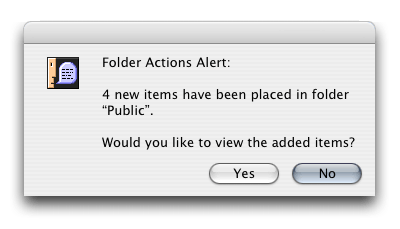

Get warning when something is added to your dropbox
donderdag 21 oktober 2004 | Apple
The Mac OS X Dropbox works much like the Shared Documents folder on Windows XP. It is a shared folder on your computer that everyone on your local network can access to drop files for you. Works like a charm, but it would have been nice if you could get a warning when someone actually does that.

- Find your shared folder. This is usually your Dropbox (use Sharepoints for all you sharing tweaking).
- Right-click (or CTRL-click for the poor one-buttoned mouse people out there) on your shared folder. Choose Enable Folder actions if you haven't done so before.
- Right-click your folder again and choose Attach a Folder Action. A Finder Chooser pops up.
- Select the script called add - new item alert.scpt and press Choose.
- That's it! From now on, if someone drops something in your shared folder, you'll get a nice popup warning on your screen.